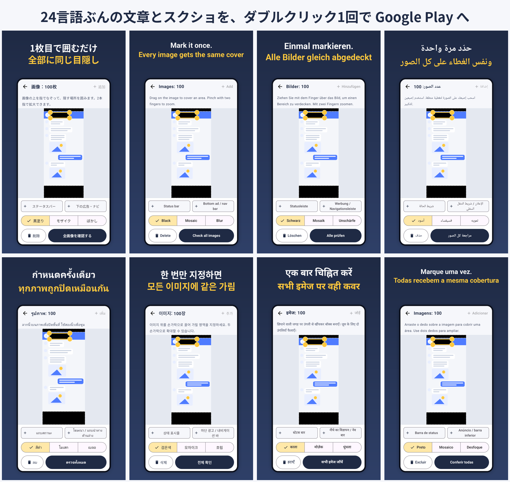
個人でAndroidアプリを作っている、Hiroshi Studio のとみーです。
先日、新しいアプリ「スクショ一括目隠し」を 24言語対応 で Google Play に出しました。アプリ本体の翻訳はAIに手伝ってもらえば何とかなります。大変だったのは、その後の ストアへの登録作業 でした。
1つの言語につき、Play Console に登録するものは次のとおりです。
これが24言語ぶんです。画面を切り替えて、コピーして、貼り付けて、画像を選んで……と数えると、約200回の手作業 になります。
さすがにやっていられないので、Google が開発者向けに用意している仕組み（Google Play Developer API）を使って、ダブルクリック1回で全言語をまとめて登録するツール を作りました（AIの Claude と相談しながら作っています）。
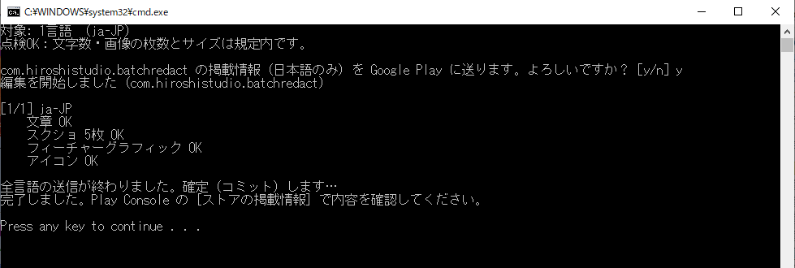
黒い画面に「完了しました」と出れば、Play Console に全部入っています
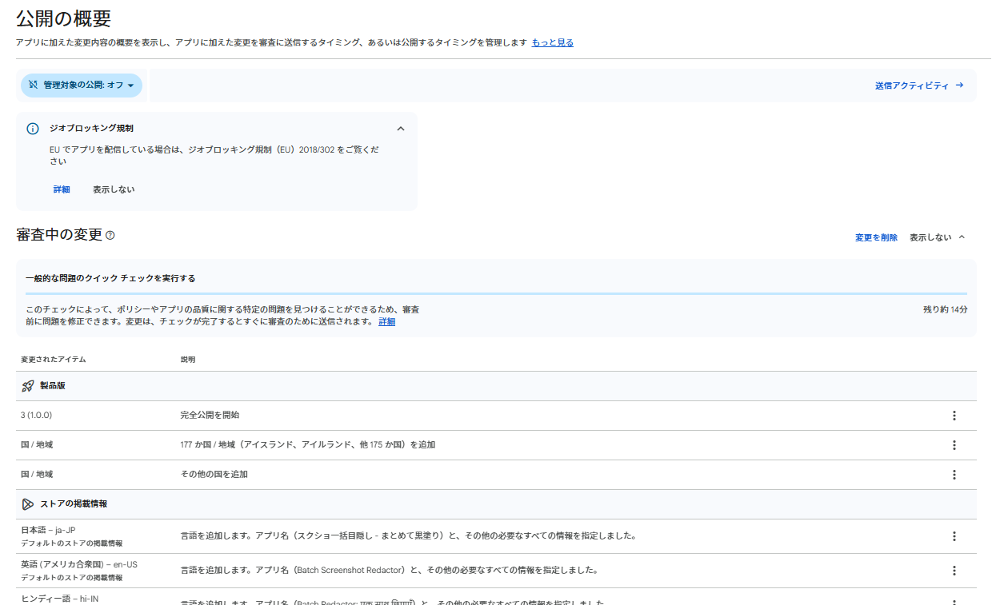
Play Console の「公開の概要」に、言語が次々と追加されていきます
最初の準備（Google Cloud と Play Console の設定）は 30分〜1時間 ほどかかります。しかも、Google の英語の説明を読んでも分かりにくいところで、私は 3回つまずきました。
この記事では、その つまずいた画面と、抜け出し方 もすべてスクショ付きで載せています。2回目以降は、ダブルクリックするだけです。
ツールは 無料 で配布しています。役に立ったら、記事の最後の Ko-fi から応援してもらえるとうれしいです。
最初の1回だけやる準備（STEP 1〜6）と、毎回やること（STEP 7〜8）に分かれています。
ツールをダウンロード（PlayUploader.zip・無料）
ZIPファイルを右クリックして「すべて展開」を選び、デスクトップなどに置いてください。中身は次のとおりです。
1_setup.bat：最初の1回だけ。必要な部品をインストールします2_check.bat：点検だけ（何も送りません）3_upload_test_language.bat：1言語だけお試しで送ります4_upload_all_languages.bat：全言語を送りますsettings.txt：設定ファイルstore フォルダ：素材を入れるフォルダ（見本入り）README.txt：説明書まだアプリを作っていない場合は、Play Console の「アプリを作成」から作ります。
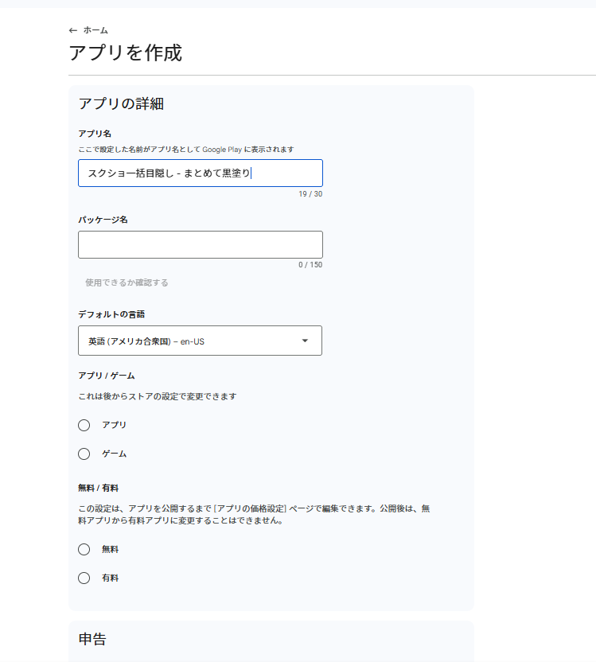
com.～）を入れます。後から変えられない ので注意してくださいポイント：アプリ本体（AAB）を、先に 内部テストへ1回アップロードしておく と安心です。AAB がまだ1つもないアプリだと、Google 側で受け付けてもらえない場合があります。
ツールを動かすために「Python」という部品を入れます。
1_setup.bat をダブルクリックし、「DONE」と出たら完了です2_check.bat をダブルクリックし、「点検OK」と出ることを確認します（見本の素材で点検されます）ポイント：青い画面で「WindowsによってPCが保護されました」と出たら、「詳細情報」→「実行」を押してください。ネットからダウンロードしたファイルには、いつも出る警告です。
ツールが Play Console を操作するための「入口」を、Google Cloud に作ります。お金はかかりません。
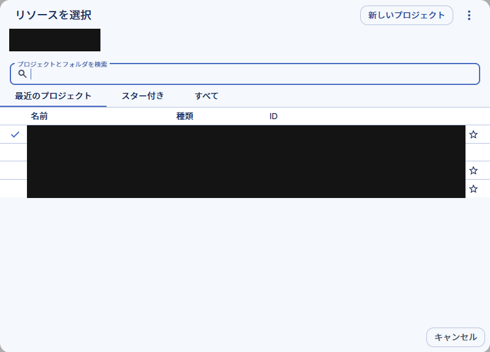
my-play-uploader など、分かりやすいものにして「作成」を押します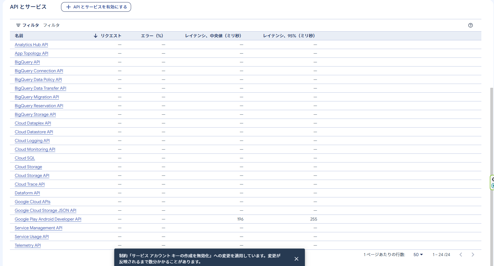
「APIとサービス」の一覧に Google Play Android Developer API が出ていれば OK です
Play Console を人の代わりに操作する、ロボット用のアカウント（正式名は「サービスアカウント」）を作ります。
play-uploader と入れて「作成して続行」を押します。役割（ロール）の設定は飛ばして「完了」で大丈夫です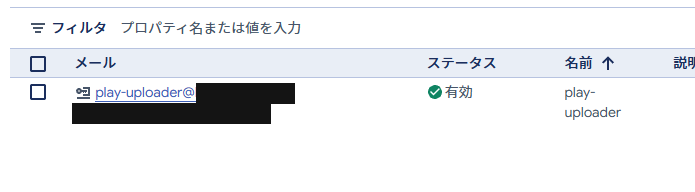
play-uploader@～.iam.gserviceaccount.com という メールアドレスをコピーして、メモ帳に貼っておきます（STEP 6 で使います）ここでエラーが出たら、次の STEP 5 へ。 出なければ STEP 5 は飛ばしてください。
key.json.json になってしまうことがあります）key.json に変えます注意：key.json はパスワードと同じです。 人に渡したり、GitHub などに上げたりしないでください。
私はここで、最初につまずきました。
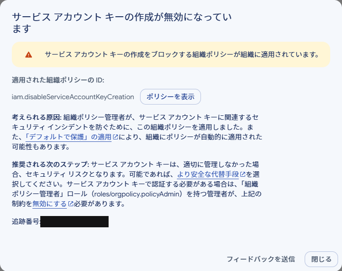
Google Cloud に「組織」がある場合（会社や屋号で Google Workspace などを使っていると、いつの間にか作られていることがあります）、Google が安全のために 鍵の作成を最初から止めている ことがあります。
組織の持ち主であれば、設定を変えて解除できます。組織全体ではなく、今回のプロジェクトだけ 解除するのが安全です。
組織の持ち主でも、この権限は最初から付いていません。
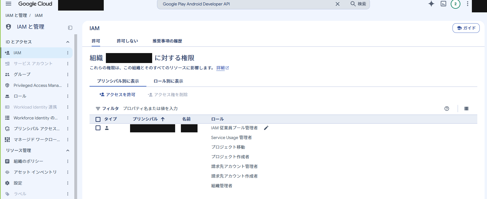
最初は「組織ポリシー管理者」がありません
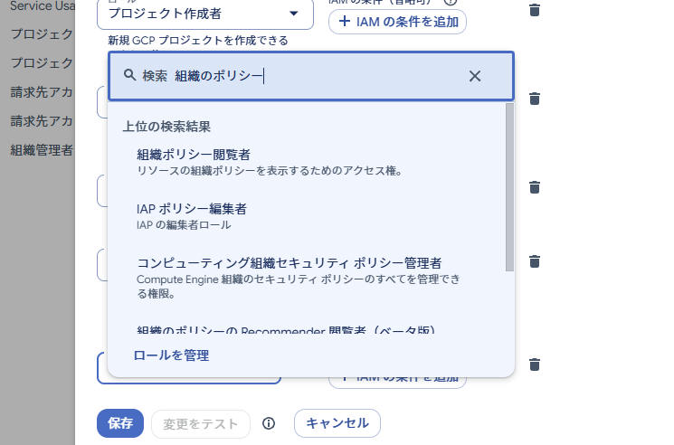
「組織 の ポリシー」と入力すると出てきません。「の」を入れずに「組織ポリシー管理者」です（英語なら policyAdmin）
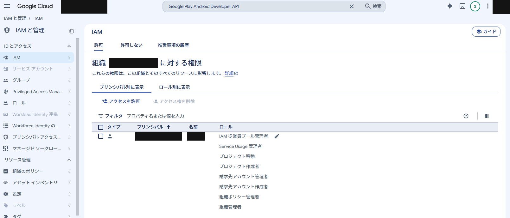
ロールの一覧に「組織ポリシー管理者」が増えれば OK です
disableServiceAccountKeyCreation と入力しますポイント：画面の一番上にある大きな検索欄に入力しても、ポリシーは出てきません。ポリシー一覧のすぐ上にある「フィルタ」欄に入力してください。私はここでも迷いました。
似た名前で managed が付いたポリシーも出てきた場合は、同じようにオフにしてください。
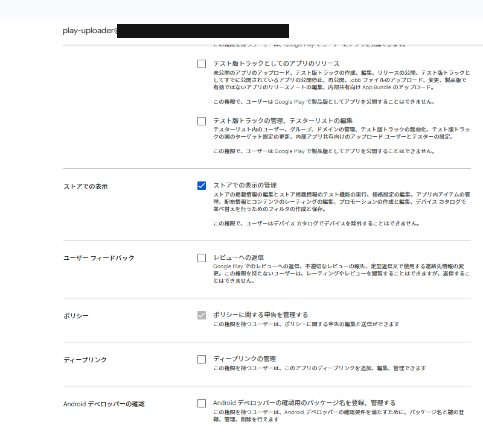
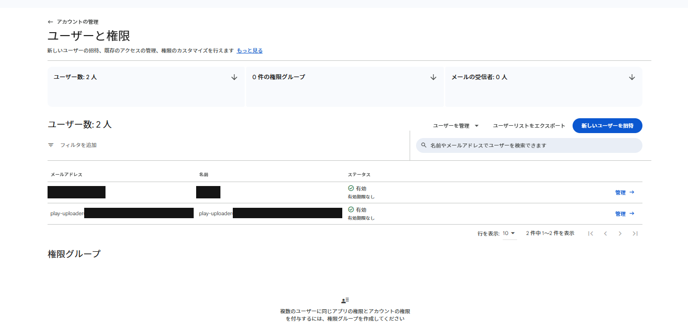
一覧にロボットのアドレスが「有効」で出れば OK です
ポイント：アプリ単位ではなく「アカウントの権限」に付けておくと、次のアプリでも設定し直さずに使えます。また、上の3つには「製品版として公開する」権限は含まれていないので、ロボットが勝手にアプリを公開することはありません。
store フォルダの中を、自分のアプリの素材に差し替えます。
store\listing\listing.csv：文章（Excel で編集できます）language（言語コード）、title（アプリ名・30文字まで）、short_description（簡単な説明・80文字まで）、full_description（詳しい説明・4000文字まで）store\ja-JP\ のように、言語コードの名前のフォルダ を言語ごとに作りますphone_01.png～phone_08.png：スクショ（2〜8枚、PNG か JPG）feature.png：フィーチャーグラフィック（1024×500、なくても可）store\icon.png：アイコン（512×512、なくても可）言語コードの例：日本語 ja-JP、英語 en-US、スペイン語（中南米）es-419、ポルトガル語（ブラジル）pt-BR、ドイツ語 de-DE、フランス語 fr-FR、韓国語 ko-KR、中国語（簡体字）zh-CN、中国語（繁体字）zh-TW、ヒンディー語 hi-IN、インドネシア語 id、アラビア語 ar、タイ語 th、ベトナム語 vi
settings.txt をメモ帳で開き、PACKAGE= の後ろを自分のアプリのパッケージ名に書き換えて保存します。
PACKAGE=com.example.yourapp KEY=key.json ASSETS=store ICON_LANG=ja-JP TEST_LANG=ja-JP
2_check.bat をダブルクリックし、「点検OK」と出るのを確認します。文字数オーバーや画像サイズの間違いがあれば、ここで教えてくれます3_upload_test_language.bat をダブルクリックし、「よろしいですか？」と出たら y を押して Enter を押します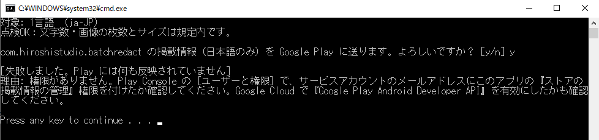
STEP 6 で権限を渡しても、Google 側に反映されるまで時間がかかります。早ければ数十分、遅いと24〜48時間かかることがあるそうです。
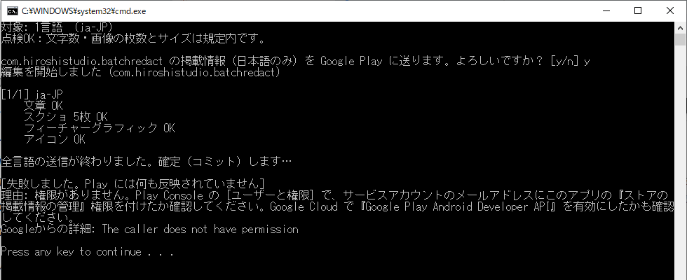
文章や画像は「OK」なのに、最後の確定（コミット）だけ断られることもあります。これも反映待ちのサインでした
私の場合は、STEP 6 の権限（特に「テスト版トラックとしてのアプリのリリース」）を付け足してから 1時間ほど待ったら、そのまま通りました。
失敗しても Google Play には何も反映されないので、何度試しても大丈夫です。1日待ってもだめな場合は、ロボットに一時的に「管理者（すべての権限）」を付けて試し、成功したら元の権限に戻す、という方法もあります。
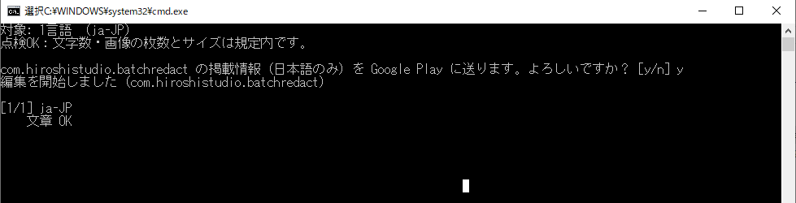
ウィンドウのタイトルに「選択」と出ていたら、それが原因です。黒い画面の中をクリックすると、Windows はこの状態になって処理が一時停止します。Esc キーを1回 押すと動き出します。送信中は、黒い画面の中をクリックしないでください。
1言語で成功したら、4_upload_all_languages.bat をダブルクリックして y を押すだけです。24言語でも数分で終わります。
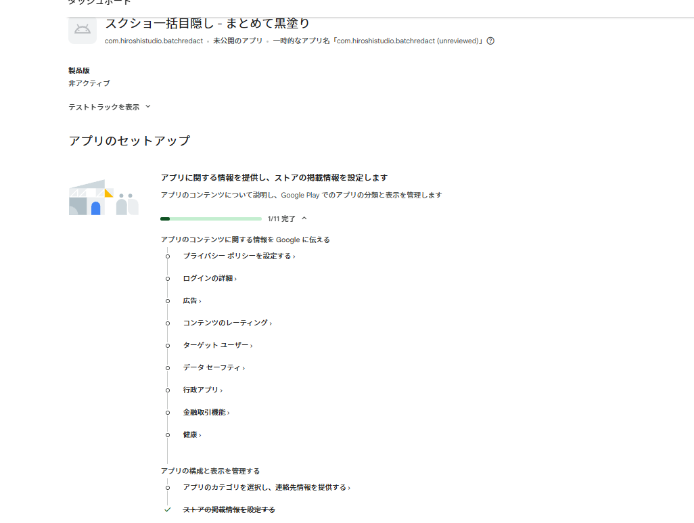
Play Console のダッシュボードで「ストアの掲載情報を設定する」にチェックが付きます
次のアプリからは、store フォルダの中身を差し替えて、settings.txt のパッケージ名を書き換え、STEP 7 と 8 をやるだけです。
Play Console の「アプリのコンテンツ」にある次の申告は、Google が API を用意していないので、手で入力する必要があります。
ただ、データセーフティだけは、別のアプリで入力したものを CSV で書き出して、新しいアプリに読み込む ことができます。シリーズでアプリを出すなら、これも覚えておくと楽になります。
また、2026年5月の Google I/O で、Play Console に Gemini による 掲載情報の自動翻訳 が発表されました。ただし、スクショの中の文字やアプリ画面は翻訳されません。「文章の翻訳は Gemini で下書き、スクショは自分で用意して、登録はこのツールでまとめて」という組み合わせがおすすめです。
最初の準備さえ終われば、24言語の登録はダブルクリック1回です。私は、つまずいた3か所を抜けるのに半日かかりました。この記事が、その半日の節約になればうれしいです。
最後に宣伝です。今回24言語で出したのは「スクショ一括目隠し」というアプリです。たくさんのスクショの同じ場所（ステータスバーや広告、ユーザー名など）を、一度にまとめて黒塗りできます。こういう解説記事のスクショづくりにも便利なので、よければ使ってみてください。
不明な点や、画面が変わっていて分からないところがあれば、コメントで教えてください。
このツールと記事は無料です。もし時間の節約になったら、Ko-fi でコーヒー1杯分の応援をしてもらえると、次のツールづくりの励みになります。
※ 画面や手順は、2026年11月時点のものです。